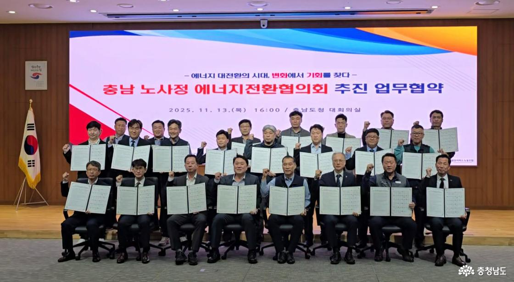
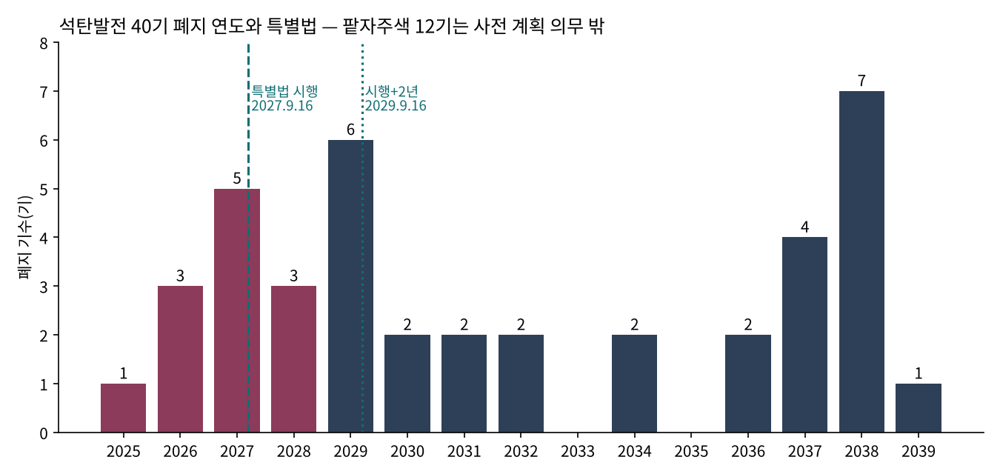
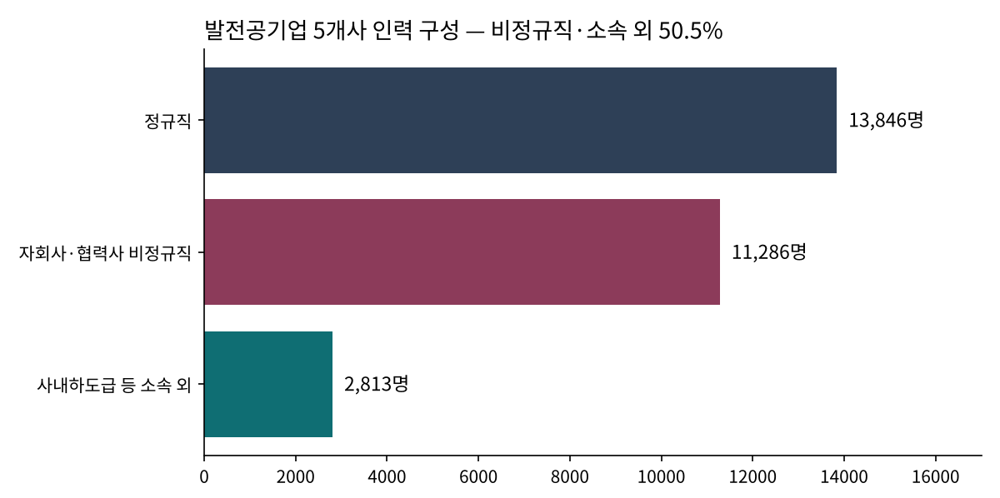
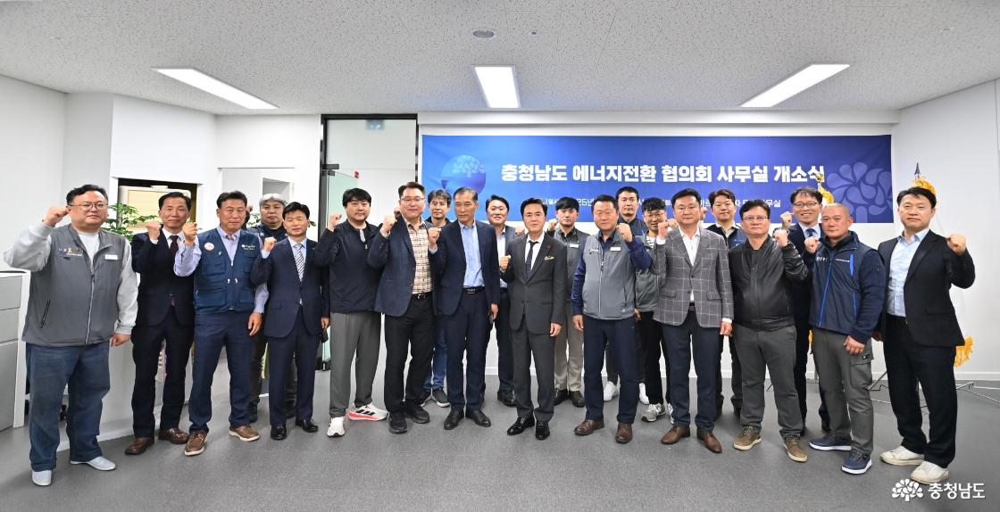

[기후위기] 석탄발전 노동자 특별법, 폐지의 시계와 법의 시계
특별법 2027년 9월 16일 시행
석탄 12~14기, 사전 계획 의무 밖
발전5사 인력 절반이 협력사
AI경제저널=김갑봉 기자 | 「석탄화력발전소 노동자 및 폐지지역 지원 특별법」이 2026년 9월 15일 제정됐다. 시행은 공포 1년 뒤인 2027년 9월 16일이다. 법은 발전사업자에게 폐지 예정일 2년 전까지 노동자 고용안정과 재배치 계획을 담은 폐지계획을 내라고 정했다. 연구소는 이 조항을 제11차 전력수급기본계획의 발전기별 폐지 일정에 대어 봤다. 2040년까지 문을 닫는 석탄발전 40기 가운데 12~14기는 이 의무를 거치지 않는다.
법이 정한 것 — 2년 전 계획과 지원 조문
특별법 제5조는 석탄화력발전소를 폐지하려는 발전사업자가 폐지 예정일 2년 전까지 폐지계획을 세워 기후에너지환경부 장관에게 내도록 했다. 계획에는 폐지 일정, 노동자의 고용안정과 재배치 계획, 대체사업 의향, 지역경제영향조사, 주민·노동자·지방자치단체 의견수렴 결과가 들어간다.
지원 조문은 대부분 「할 수 있다」로 적혔다. 국가는 재배치·재취업을 하지 못하고 퇴직한 노동자에게 보조금을 지급할 수 있다(제12조 제4항). 대체사업자가 노동자를 고용하면 국가와 지방자치단체는 고용보조금, 전환배치지원금, 교육훈련보조금을 지원할 수 있다(제13조).
고용노동부 장관의 직무전환 훈련과 재배치 지원은 「우선 지원하여야 한다」로 적혔다(제12조 제2항). 재원은 따로 기금을 두지 않았다. 일반회계, 기후대응기금, 지역균형발전특별회계, 에너지 및 자원사업 특별회계, 전력산업기반기금 등 기존 재원 여섯에서 충당할 수 있다(제20조).
장관은 전력계통 영향분석 결과에 따라 폐지계획을 승인하는 대신 해당 발전기를 안보전원발전기로 지정할 수 있다(제6조). 지정기준과 기간, 보상은 대통령령에 맡겼다.

폐지의 시계 — 2039년까지 40기
제11차 전력수급기본계획(산업통상자원부 공고 제2025-169호)은 석탄 설비가 2023년 39.2GW에서 2038년 22.2GW로 준다고 적었다. 2039년까지 가동 30년을 넘기는 석탄발전은 40기, 2만910MW다.
2036년까지 28기가 문을 닫고 LNG 발전으로 바뀐다. 태안 1~6호기, 당진 1~6호기, 보령 5·6호기, 삼천포 3~6호기, 동해 1·2호기, 하동 1~6호기, 영흥 1·2호기다. 2037~2038년에는 12기가 양수·수소·암모니아 발전 등으로 바뀐다.
정부는 2025년 11월 탈석탄동맹(PPCA)에 가입하며 석탄발전 61기 가운데 40기를 2040년까지 폐지한다고 밝혔다. 남은 21기는 공론을 거쳐 일정을 정한다. 2026년 9월 제12차 전력수급기본계획 공개토론회에서는 이 21기를 2037~2039년에 앞당겨 닫는 발제안이 나왔다.
인천의 일정도 계획 연도표에 있다. 영흥 1호기는 2034년 6월, 2호기는 같은 해 12월 폐지하고 같은 자리에 800MW씩 LNG 발전을 짓는다. 영흥 3·4호기는 2038년에 30년을 채운다. 5·6호기는 40기 목록에 없다.

법의 시계 — 사전 계획 의무 밖 12~14기
연구소는 특별법 부칙과 제11차 계획 연도표의 날짜를 맞대어 셌다. 셈은 날짜 대조뿐이고 추정은 없다. 폐지 일정은 제11차 계획 기준이다.
법 시행 전에 문을 닫는 발전기는 6기다. 태안 1호기(2025년 12월), 하동 1호기와 보령 5호기(2026년 6월), 태안 2호기(2026년 12월), 삼천포 3·4호기(2027년 4월)다. 이들은 제5조의 폐지계획 절차를 거치지 않는다. 부칙 제2조는 이 발전소가 있는 지역에 지원 조문(제7·8조, 제11~21조)만 적용한다.
시행 뒤 2년 안에 문을 닫는 발전기는 6~8기다. 보령 6호기와 하동 2·3호기(2027년 12월), 삼천포 5호기·태안 3호기·하동 4호기(2028년 12월)가 여섯이다. 동해 1·2호기는 2029년 9월 폐지인데 계획에 날짜가 없어 셈에 들 수도 빠질 수도 있다.
이 발전기에 대해 부칙 제3조는 법 시행 뒤 6개월 안에 폐지계획을 「제출할 수 있다」고 정했다. 의무가 아니다.
둘을 더하면 12~14기, 6120~6520MW다. 2040년까지 폐지가 정해진 40기의 30~35%다. 12기를 지역으로 나누면 충남(태안·보령) 5기, 경남(하동·삼천포) 7기다. 동해 1·2호기가 들면 강원 2기가 더해진다. 인천 영흥 1·2호기는 의무 대상으로, 폐지계획을 1호기는 2032년 6월, 2호기는 2032년 12월까지 내야 한다.
보호의 범위 — 협력사와 소속 외 노동자
한재각(2024)은 한국노동연구원 『노동리뷰』 229호에서 이태성(2021)의 집계를 인용해 발전공기업 5개사 인력을 2만5132명으로 적었다. 정규직이 1만3846명, 자회사·협력사 비정규직이 1만1286명이다. 사내하도급 등 소속 외 인력 2813명을 더하면 약 2만8천명이다.
연구소가 이 수를 다시 엮으면 비정규직과 소속 외 인력은 1만4099명으로 전체의 50.5%다. 같은 글은 KEYTOWAY(2021)의 분석을 인용해, 제9차 계획의 폐지 30기에서 직무 전환이 없으면 최대 7935명이 일자리를 잃고 LNG로 바꾼 발전소의 필요 인원은 3024명이라고 적었다. 옮길 자리가 없는 4911명은 61.9%다.

특별법 제2조 제3호는 발전소 근무자와 상주 공사·용역 수행자, 연료 하역 등 전담 용역 수행자를 「석탄화력발전소 노동자」로 정했다. 다만 그 가운데 누구를 넣을지는 대통령령에 맡겼다. 2차 협력사와 소속 외 인력이 보호 범위에 드는지는 시행령에서 갈린다.
Haywood, Janser and Koch(2021)는 독일 갈탄 광업 사업장에서 일한 사람 전체의 고용 이력을 분석했다. 발전소 인력은 분석에서 뺐다. 실직한 석탄 부문 노동자가 새 일자리를 찾기까지는 평균 약 3.5년이 걸렸다. 다른 노동자는 약 2.1년이었다. 재취업 뒤 임금은 평균 27% 낮았고, 1인 평생 후생 손실은 약 15만5283유로로 계산됐다. 손실의 97% 넘게가 임금 하락과 고용 안정성 상실에서 왔다.
돈과 사람 — 스페인·독일·충남, 그리고 인천
스페인 생태전환부는 2019년부터 2025년까지 탄광 지역에 지원금 19억8266만유로를 내줬다고 2026년 7월 밝혔다. 공정전환연구소가 직접 추진한 사업은 5억5496만유로로, 광업 협약이 2027년까지 약속한 2억5000만유로의 두 배를 넘었다. 공정전환연구소가 고용 약정을 걸고 내준 지원에는 기업 사업 일자리 2298개 이상이 딸려 있다.
Haywood 외(2021)는 독일 정부가 밝힌 조기퇴직 보조 비용을 약 50억유로, 석탄 부문 대상 노동자를 약 4만명으로 적었다. 이 제도는 58세 이상만 받는다.
두 나라는 돈과 사람의 수를 함께 밝혔다. 한국 특별법에는 금액이나 대상 인원을 정한 조항이 없다.

국내에는 지방 기금이 먼저 섰다. 충청남도는 「정의로운 전환 기금 설치 및 운용에 관한 조례」로 기금을 두고 지역자원시설세 특별회계 전입금 등 여섯 재원을 모은다. 용도는 고용승계, 재취업훈련, 전업지원금 등 열 가지이고 존속기한은 2030년 말이다.
인천시는 2026년 3월 「정의로운 노동전환 지원에 관한 조례」를 만들었다. 시장은 지원계획을 4년마다 세우고 실태조사와 노동전환지원·훈련센터를 둘 수 있다. 위원회는 고용심의회가 대신한다. 기금 조항은 없고, 석탄이나 영흥을 적은 조문도 없다.
법은 섰고 폐지 날짜도 계획 연도표에 박혀 있다. 그러나 40기 가운데 12~14기는 법이 정한 「2년 전 고용안정·재배치 계획」을 의무로 거치지 않고 문을 닫는다. 협력사·소속 외 1만4천여 명이 「노동자」에 드는지는 시행령에서 갈리고, 인천 조례에는 기금도 영흥도 없다. 기후에너지환경부는 2026년 10월 22일 국회 노동정책 토론회 의견을 제12차 계획과 연계한 「석탄발전 전환 이행안」과 특별법 하위 법령에 반영하겠다고 밝혔다. 영흥 1호기의 폐지계획 제출 기한은 2032년 6월이다.
참고문헌
- Haywood, L., Janser, M., & Koch, N. (2021). The Welfare Costs of Job Loss and Decarbonization: Evidence from Germany's Coal Phase Out. IZA Discussion Paper No. 14464(본문 수치는 이 판 기준). 게재본 Journal of the Association of Environmental and Resource Economists, 11(3), 577–611(2024). https://www.iza.org/publications/dp/14464
- 한재각(2024). 「발전산업의 탈탄소 전환과 노동조합의 대응」. 『노동리뷰』 229호, 한국노동연구원, 9~23쪽.
- 산업통상자원부(2025). 「제11차 전력수급기본계획(2024~2038)」. 공고 제2025-169호, 2025. 2. 21.
- 「석탄화력발전소 노동자 및 폐지지역 지원 특별법」. 법률 제21942호, 2026. 9. 15. 제정, 2027. 9. 16. 시행. 국가법령정보센터.
- 기후에너지환경부(2026). 「석탄발전 폐지에 대응한 고용 안정과 일자리 전환 방안 논의」. 보도자료, 2026. 10. 21.
- 「인천광역시 정의로운 노동전환 지원에 관한 조례」. 인천광역시조례 제7701호, 2026. 3. 4. 제정. 국가법령정보센터.
- 「충청남도 정의로운 전환 기금 설치 및 운용에 관한 조례」. 충청남도조례 제6165호, 2026. 7. 31. 일부개정. 국가법령정보센터.
- Ministerio para la Transición Ecológica y el Reto Demográfico(2026). 「El MITECO ha destinado 2.000 millones a construir el futuro de las comarcas mineras desde 2019」. 보도자료, 2026. 7. 21.
- Powering Past Coal Alliance(2025). 「Republic of Korea and Bahrain join the Powering Past Coal Alliance at COP30」. 2025. 11. 17.
- 전자신문(2026). 「2040년 석탄발전 21기 조기폐지 추진…최대 10기 '안보전원' 검토」. 2026. 9. 18.
사진·도표 출처
- [사진1] 충청남도 보도자료 「‘정의로운 에너지 전환’ 노사정 합심」(2025.11.13) 가운데 「충남 노사정 에너지전환협의회」 업무협약 사진, 공공누리 제1유형(출처표시). https://www.chungnam.go.kr/cnportal/cnapcPressList/cnapcPress/view.do?nttId=2166840&menuNo=500498
- [사진2] 충청남도 보도자료 「‘정의로운 에너지 전환’ 노사정 합심」(2025.11.13) 가운데 「충청남도 에너지전환협의회」 사무실 개소 사진, 공공누리 제1유형(출처표시). https://www.chungnam.go.kr/cnportal/cnapcPressList/cnapcPress/view.do?nttId=2166840&menuNo=500498
- [도표1] AI경제저널 작성, 자료 한재각(2024), 『노동리뷰』 229호, 한국노동연구원
- [도표2] AI경제저널 작성, 자료 산업통상자원부 「제11차 전력수급기본계획」 부록 연도별 설비 변동표, 「석탄화력발전소 노동자 및 폐지지역 지원 특별법」 부칙
※ 이 기사는 AI 프로그램 클로드를 활용해 작성했습니다.
관련기사
- [기후위기] 탄소값 세 배 가까이, 영흥화력 청구서는 누가 받나
- 인천시, 국제기후금융·산업 콘퍼런스 열고 「영흥 AI에너지 파크」 발표
- 남동발전 SMR 원전 협약, 영흥도를 가리키는 정황
- 미국 침략 호르무즈 사태, 인천 해상풍력 6.2GW(기가와트) 시급
저작권자 © AI경제저널 무단전재 및 재배포, AI학습 및 활용 금지